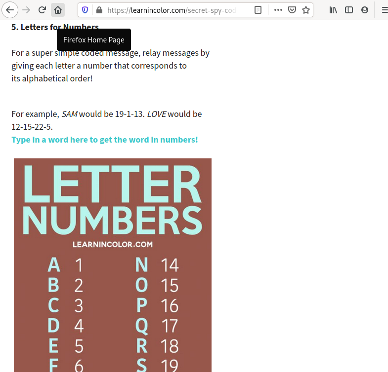

Q Behind Qanon: The Uncomfortable Evidence
Table of Contents
- 1. Who is Q?
- 2. How is Q’s identity verified? Tripcodes.
- 3. Why would Q use an insecure form of verification?
- 4. Why would Q limit comms to a site that is beholden to U.S. law?
- 5. Why would Q limit comms to a 8kun, a site with young cartoon porn and fetishes?
- 6. Why would Q leave “codes” in his signatures?
- 7. Why would Q use 8kun?
- 8. Who are the owners/administrators of 8kun?
1 Who is Q?
Given the gravity and power behind Q and the QAnon movement, nothing is more important than verifying the identity of Q.
How do we know Q’s messages are coming from someone at a high level of military intelligence?
Can we confirm the validity of Q’s messages?
It may be important for Q to keep his actual identity a secret.
- Can we confirm he has powerful resources at his disposal?
- Can we confirm he is fighting attacks by the CIA, FBI, and Hollywood?
- Is he taking the types of precautions that someone would take when faced with these threats?
As truth-seeking patrions, we must follow the evidence wherever it leads us; however uncomfortable it makes us.
2 How is Q’s identity verified? Tripcodes.
Q uses tripcodes to prove that his messages are truly from him and not from an imposter.
Tripcodes are a feature of the image boards that Q posts his messages on.
When Q posts a message, he types in his password. The message board software (4chan/8chan/8kun) converts his password to certain seemingly random characters. Those characters are Q’s “tripcode”.
Only someone who knows the password can post using that tripcode.
For example:
Q posts a message using the password “M@tlock!”. That password gets converted to the tripcode “!UW.yye1fxo”.
Only someone who posts with the password “M@tlock!” will be able to post under the tripcode “!UW.yye1fxo”.
That is how Q proves that messages are from him.
Only he knows the password (supposedly…), M@tlock!, so only he posts messages with the tripcode !UW.yye1fxo
But tripcodes are insecure!
They have been cracked many times. These are some of Q’s tripcodes that have been cracked by ordinary citizens on consumer hardware.
Tripcode: ITPb.qbhqo -> Password: Matlock Tripcode: UW.yye1fxo -> Password: M@tlock! Tripcode: xowAT4Z3VQ -> Password: Freed@m- Tripcode: 2jsTvXXmXs -> Password: F!ghtF!g Tripcode: 4pRcUA0lBE -> Password: NowC@mes Tripcode: CbboFOtcZs -> Password: StoRMkiL Tripcode: A6yxsPKia. -> Password: WeAReQ@Q
These weren’t cracked by the boundless resources of the deep state. These were cracked with off-the-shell software and hardware that any normal citizen could operate.
There are articles as old as 1997 that expose the insecurties of the DES/crypt(3) algorithm used by the message boards. http://personal.stevens.edu/~khockenb/crypt3.html
Note: “Longer passwords can be ignored, since crypt(3) will discard all but the first 8 characters of a password”
So even if Q used a more secure/longer password, only the first 8 characters get checked.
Did he know this? If not, he must not care very much about security. If he did know it, then why were his confirmed leaked passwords longer than 8 characters?
Like this one: “NowC@mesTHEP@in—23”
He’s either ignorant about security or he’s purposefully misleading, or both.
3 Why would Q use an insecure form of verification?
Q hasn’t said who he is.
But his message is that he is intelligent when it comes to security and that people in power are trying to discredit and quiet him.
Choosing insecure message board tripcodes as a form of verification is contrary to that message.
Surely someone like Q would know that this type of tripcode is insecure.
Surely Q would use a secure and platform-agnostic method of verification like PGP.
With PGP signing, Q could prove his identity on ANY platform. Even if 4chan/8chan/8kun got shut down, Q’s messages and identity could still be verified.
By choosing to use a tripcode, Q has restricted his verification to a particular message board.
Why does Q use insecure identity verification? It contradicts his own message.
4 Why would Q limit comms to a site that is beholden to U.S. law?
Q has chosen a form of communication, 4chan/8chan/8kun, that is insecure and beholden to U.S. law.
8kun even complies to DMCA copyright notices.
If Q is in a fight against the Hollywood, the deep state, the CIA, and the FBI, why would he choose restrict his message to a site that conforms with their laws?
Since there is a simple and platform-agnostic option available, PGP, why would he choose insecure and restrictive 8chan tripcodes and “no outside comms”?
Why does Q restrict his message to a platform that is beholden to the law? It contradicts his own message and motives.
5 Why would Q limit comms to a 8kun, a site with young cartoon porn and fetishes?
These some of the most popular message boards on 8kun:
- Hentai Games General (Hentai is cartoon porn. Because cartoons don’t have age, much of this porn is drawn to look very young.)
- Adult Baby - Diaper Lover
- Tickling Refuge (A tickling/torture fetish board)
- Hentai & Cartoon Porn
- Erotic Roleplay
- Furry (Cartoon porn and roleplay of animal sex)

If Q’s message is to clean up deep state pedophile rings, why does he restrict communication to an online platform that caters to this filth?
We already see it has nothing to do with identity verification. That can be done through more secure means, like PGP.
We already see it has nothing to do with free speech and not being silenced. 8kun is beholden to the law and even complies with DMCA notices.
Q posting on 8kun is contradictory to his own message.
6 Why would Q leave “codes” in his signatures?
This is another contradiction in Q’s message.
Why use codes? Why drop hints? Why not be direct?
Possible answers?
- Q wants the truth hidden from the deep state.
Then the codes must be sophisticated. The clues must be obscure.
Are the resources of the imageboard posters greater than the resources of the deep state? Can imageboard posters figure this out before the deep state?
- Q wants people to think for themselves. He wants to connect with people who have an interest in pulling on threads to find an answer.
Then the codes must be intriguing.
- Q wants to connect with people who are good detectives. The deep state is well-hidden.
Then the codes must be difficult to crack.
But Q’s codes are not sophisticated or difficult to crack.
Q uses the signature God bless my fellow Americans. 4,10,20 in drop 35.
What does that mean? Is that a date? Some type of coordinates?
It sparks something. It makes his post stand out from posts that don’t include something “mysterious”.
Then in drop 40 he reveals 4,10,20 A,b,c,d,e......
Why would Q use such a simple cipher? Why not just sign off with “D.J.T.”?
The first result in Google for the letter-number cipher is a page titled “7 Secret Spy Codes and Ciphers for Kids”.

The code is so simple, it’s effectively no code at all. Why not be direct?
If you say he’s not direct because he needs people to think for themselves and dig, then why does he respond with the answer to the cipher 5 drops later?
If you say there is more meaning to the code, like the date is significant, then why would Q post a significant date when he needs to keep things hidden from the deep state?
The code is not sophisticated. Q gives the answer to confirm the decipher. Anons don’t need to be expert sleuths. This contradics Q’s own message.
7 Why would Q use 8kun?
Q works directly with CodeMonkey, an administrator of 8kun/8chan.
CodeMonkey is Ron Watkins.
https://twitter.com/codemonkeyz
Ron Watkins is Jim Watkins son.
Jim Watkins is the owner of 8chan/8kun.
Jim’s son, Ron Watkins is CodeMonkey, is the adminstrator of 8kun, and is a programmer.
Whenever 8chan or 8kun is “attacked”, Ron Watkins is the person responsible for keeping the website up.
Ron works on a crypto project, Susucoin.. Note the young-looking anime girl that is the mascot/icon of Susucoin. Part of Q’s message is about fighting pedophilia. Q coordinates with CodeMonkeyZ (Ron Watkins, 8chan/8kun administrator). Ron contributes to Susucoin. Susucoin’s “mascot” is a cartoon of a young girl.
CodeMonkeyZ (Ron Watkins) retweeted that they will be giving out Susucoin to whoever draws the cutest picture of their mascot, Susuko. https://twitter.com/susucoin
CodeMonkeyZ (Ron Watkins) also retweeted these young-looking Japanese girls making hearts over their exposed breasts.
This is the administrator of 8kun, he works directly with Q to verify Q’s identity.
If Q is fighting to protect children, why does his identity get verified by Ron Watkins, CodeMonkey, who retweets young-looking pornography and sexually suggestive young-looking cartoons?
8 Who are the owners/administrators of 8kun?
Jim Watkins owns the website that Q posts on, 8kun.top.
He was the former owner of Q’s previous website, 8chan.
James Arthur Watkins Father of Ron Watkins (CodeMonkey) a.k.a Xerxes Watkins
Jim launched TheGoldwater.com in 2016, about 1 year before Q made his first post.
Ron retweets TheGoldwater in 2016. TheGoldwater pushes the same narrative that Q is pushing.
TheGoldwater starts in 2016, a year before Q.
- “Mind Control Techniques Employed By The Elite With The Help Of The Mainstream Media”
- “Shut Down the Corrupt Clinton Foundation - Judicial Watch ”
- “House Investigators Questioned Creepy Podesta”
- “MORE PEDO BUSTS! ‘A Current Affair’ Reporter Ben McCormack Arrested”
- “HAPPENING AGAIN! Massive Pedophile Ring Of 900 Arrested - Media Silent”
- “More Proof Comey is a …”
- “Massive Pedophile Ring Rounded up in California:”
Those are not from Q.
Those are from Jim Watkin’s website, TheGoldwater, from 2016 to early 2017, before Q started posting the same narrative on 4chan.
Jim Watkins also is in control of the Twitter account \@isitwetyet.
He is the creator of a Super PAC, Disarm the Deep State.
This is the owner of 8kun. He is pushing the same narrative as Q. He’s been doing it since 2016, over a year before Q was around.
8.1 Q’s posts align with Jim Watkins interests more than just politically.
8.1.1 Pens
Q often posts pens as part of his proofs/verification.
Jim Watkins collects fountain pens.
8.1.2 Codes
Jim Watkins writes his dates with Greek letters in a code that is similar to roman numerals. This is a code that isn’t sophisticated or difficult to figure out. It’s similar to the types of codes that Q uses.
8.1.3 Oz
Q references the “Yellow Brick Road” from The Wizard of Oz.
Jim reads The Wizard of Oz on his Youtube.
8.1.4 Yoga
Q has started posting Yoga content. He links to this healing video that has the hashtag yoga. Jim Watkins is a big proponent of yoga.